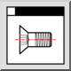

Это автоматический перевод.
Панель инструментов / Иконка:

Меню: Просмотр > Обзор библиотеки
Горячая клавиша: G, L
Команды: gl
Библиотеки деталей QCAD представляют собой набор символов и других файлов
чертежей, которые могут быть использованы в чертежах. Чтобы вставить элемент из
библиотеки деталей, необходимо сначала показать браузер библиотеки с помощью
этого инструмента.
Детали можно вставлять в чертеж с помощью перетаскивания. Когда курсор
мыши находится внутри области чертежа, можно использовать обычные инструменты
привязки для позиционирования вставленной детали и панель инструментов для
масштабирования, переворачивания или поворота детали.